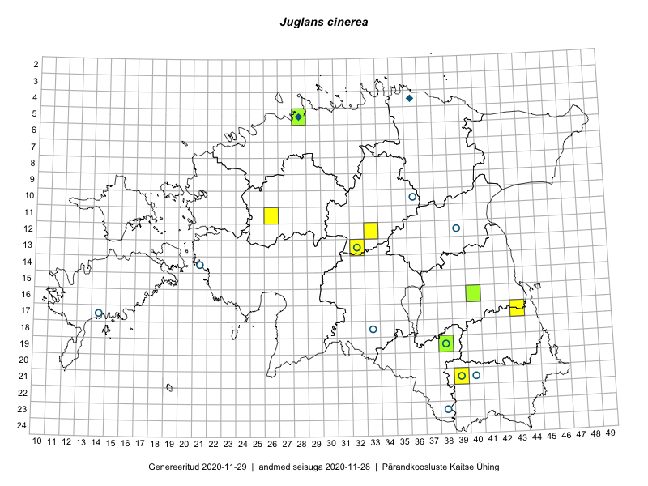

Juglans cinerea — hall pähklipuu
Juglandaceae :: Juglans cinerea L. (31)

Kaart põhineb 31 kirjel:
vaatlusi 7
herbaareksemplare 24
Taime kaasaegsed ja ajaloolised leiukohad asuvad 16 ruudus.
Tingmärgid ja ruutude arvud periooditi (U1 / V2 )
█ 2006–2020 (8/–)
◆/◇ 1971–2005 (2/0)
○ 1921–1970 (10/0)
+ kuni 1920 (0/0)
× hävinud (–/0)
? kaheldav (–/0)
| Ruut | Leidja(d) | Leiuaeg | Kirje |
|---|---|---|---|
| 17-43 | Rein Kalamees, Eerik Leibak | 2016-06-13 | ruut/ala: Juglans cinerea L. |
| 21-39 | Rein Kalamees, Eerik Leibak | 2016-06-17 | ruut/ala: Juglans cinerea L. |
| 21-39 | Rein Kalamees, Eerik Leibak | 2016-06-17 | ruut/ala: Juglans cinerea L. |
| 12-33 | Tõnu Ploompuu, Marko Veinbergs, Eerik Leibak | 2016-07-22 | ruut/ala: Juglans cinerea L. |
| 12-33 | Tõnu Ploompuu, Marko Veinbergs, Eerik Leibak | 2016-07-22 | ruut/ala: Juglans cinerea L. |
| 13-32 | Susanna Vain, Thea Kull, Raivo Kalle | 2016-07-21 | ruut/ala: Juglans cinerea L. |
| 11-26 | Hanna-Eliisa Luts, Tõnu Ploompuu | 2015-07-28 | ruut/ala: Juglans cinerea L. |
| 12-39 | Silvia Krastin | 1966-07-22 | TAA0082270: Juglans cinerea L. |
| 12-39 | Maret Kask | 1966-07-21 | TAA0082272: Juglans cinerea L. |
| 13-32 | Alma Saare, Silvia Talts | 1965-07-02 | TAA0082273: Juglans cinerea L. |
| 19-38 | Helga Tamm, Ella Tammemägi | 1960-06-24 | TAA0082275: Juglans cinerea L. |
| 19-38 | Helga Tamm, Ella Tammemägi | 1960-06-24 | TAA0082276: Juglans cinerea L. |
| 19-38 | Helga Tamm, Ella Tammemägi | 1960-06-24 | TAA0082277: Juglans cinerea L. |
| 23-38 | Ella Tammemägi | 1957-08-09 | TAA0082278: Juglans cinerea L. |
| 18-33 | Helga Tamm, Ella Tammemägi | 1959-08-10 | TAA0082281: Juglans cinerea L. |
| 21-39 | Vilma Kuusk, Haide-Ene Rebassoo | 1957-08-14 | TAA0082283: Juglans cinerea L. |
| 21-39 | Vilma Kuusk, Haide-Ene Rebassoo | 1957-08-14 | TAA0082284: Juglans cinerea L. |
| 10-36 | Maret Kask | 1956-08-08 | TAA0082285: Juglans cinerea L. |
| 14-21 | Maret Kask | 1949-08-31 | TAA0082286: Juglans cinerea L. |
| 14-21 | Maret Kask | 1949-08-31 | TAA0082287: Juglans cinerea L. |
| 14-21 | Maret Kask | 1949-08-31 | TAA0082288: Juglans cinerea L. |
| 12-39 | Alma Saare | 1966-07-22 | TAA0082289: Juglans cinerea L. |
| 18-33 | Helga Tamm, Ella Tammemägi | 1959-08-10 | TAA0082282: Juglans cinerea L. |
| 05-28 | Sander | 1995-10-13 | TALL A¤V242: Juglans cinerea L. |
| 04-36 | J. Elliku | 1995-12-06 | TALL A¤V243: Juglans cinerea L. |
| 16-40 | S. Eilart | 2008-06-25 | TU277064: Juglans cinerea L. |
| 21-40 | L. Pihlapuu | 1963-08-27 | TU277066: Juglans cinerea L. |
| 19-38 | A. Ojasoo | 2006-08-24 | TAM0004123: Juglans cinerea L. |
| 18-33 | G. Vilbaste | 1948-06-19 | TAM0023294: Juglans cinerea L. |
| 17-14 | Stange | 1926-09-16 | TAA0117347: Juglans cinerea L. |
| 05-28 | Olev Abner | 2019-02-21 | TALL A¤V504: Juglans cinerea L. |
Ruutude arv uue atlase andmekogu järgi. Muuhulgas arvestab vanemat herbaariumi, 2005. aasta atlase välitöölehtedelt uuesti digitaliseeritud andmeid jne. Uue atlase andmekogust pärinevad andmed on kaardile kantud siniste sümbolitega.↩︎
Ruutude arv 2005. aasta atlase (Kukk, T., Kull, T., Eesti taimede levikuatlas. Eesti Maaülikool, Põllumajandus- ja Keskkonnainstituut, Tartu, 2005) järgi. Andmeallikana on kasutatud levik.exe programmi, kus igas ruudus on registreeritud vaid uusim leid. Seetõttu on vanemate perioodide kohta andmed puudulikud. Kasutatud levik.exe andmestikus leidub mõningaid kõrvalekaldeid atlase trükis ilmunud versioonist, sagedamini tarnade ja käpaliste seas. Lisaks leidub selles andmestikus valik liike (peamiselt väheste leidudega tulnuktaimed), mille kaarte trükis ei avaldatud. Vana atlase andmed ruutudest, milles ei ole uue atlase andmekogus leide enne 2006. aastat, on kaardil esitatud punaste sümbolitega. Vana atlase andmetel hävinud ja kaheldavaid leiukohti pole hilisemate (taas)leidude põhjal korrigeeritud.↩︎